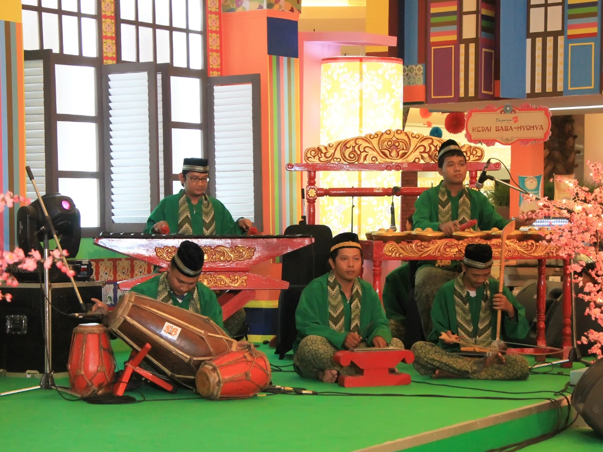
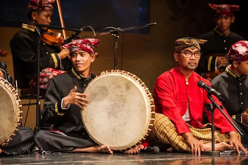
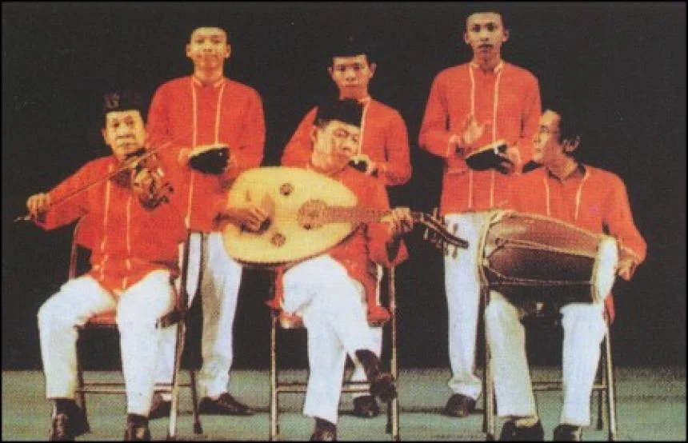
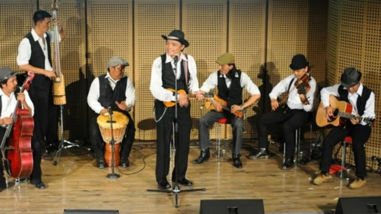
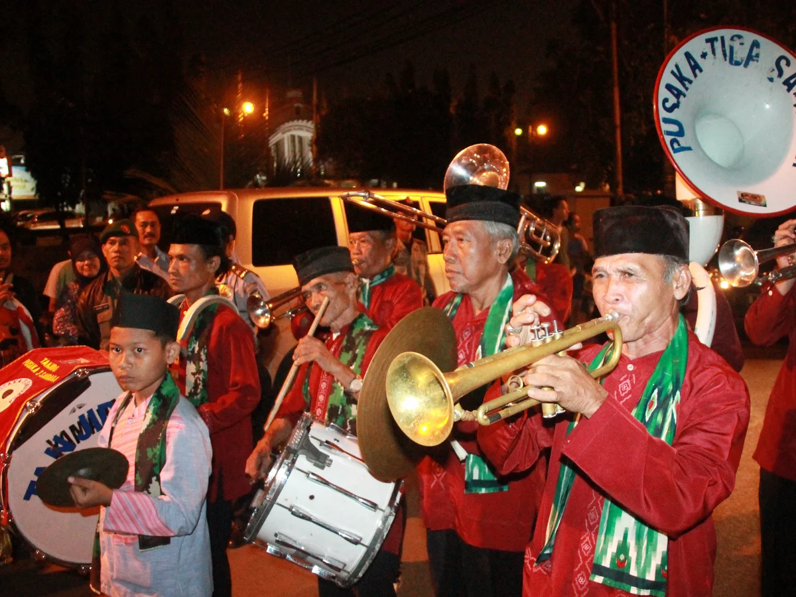

Musik
Dalam bidang kesenian, misalnya, orang Betawi memiliki seni Gambang Kromong yang berasal dari seni
musik Tionghoa, tetapi juga ada Rebana yang berakar pada tradisi musik Arab, orkes Samrah berasal dari Melayu,
Keroncong Tugu dengan latar belakang Portugis-Arab, dan Tanjidor yang berlatarbelakang ke-Belanda-an.
Gambang Kromong

Gambang keromong (atau kadang ditulis gambang kromong) adalah sejenis orkes yang memadukan alat-alat
musik gamelan dengan alat-alat musik Tionghoa, seperti sukong, tehyan, dan kong'ahyan. Sebutan gambang
kromong diambil dari nama dua buah alat perkusi, yaitu gambang dan kromong. Awal mula terbentuknya orkes
gambang kromong tidak lepas dari seorang pemimpin komunitas Tionghoa yang diangkat Belanda (kapitan Cina)
bernama Nie Hoe Kong (masa jabatan 1736-1740).
Rebana

Rebana adalah gendang berbentuk bundar dan pipih yang merupakan khas suku Melayu. Bingkai berbentuk
lingkaran terbuat dari kayu yang dibubut, dengan salah satu sisi untuk ditepuk berlapis kulit kambing.
Kesenian di Malaysia, Brunei, Indonesia dan Singapura sering memakai rebana bersama gambus digunakan
untuk mengiringi tarian zapin. Rebana juga digunakan untuk melantunkan kasidah dan hadroh. Di bumiayu,
rebana juga dijadikan sebagai lambang kota tersebut.
Samrah

Samrah adalah salah satu kesenian khas betawi yang terdiri dari tonil, orkes, dan tari samrah. Secara
etimologi, Samrah berasal dari Bahasa arab samarokh yang berarti suatu perkumpulan santai atau pesta.
Kata samarokh oleh orang Betawi dikatakan samrah atau sambrah. Musik Samrah tersebar hanya di daerah
budaya Betawi Jakarta Pusat, antara lain di Kemayoran, Sawah Besar, Tanah Abang, Cikini, Paseban, Tanah
Tinggi, dan Petojo. Samrah membawakan nyanyian berupa pantun dengan tema lagunya tentang cinta dan
keagamaan. Lagu-lagu pokoknya adalah lagu Melayu seperti, Cik Minah Sayang Sirih Kuning Masmura, Burung
Putih, dan Pulau Angsa Dua. Selain itu, terkadang membawakan lagu khas Betawi, antara lain Lenggang
Kangkung, Kicir-kicir, dan Jali-jali. Berdasarkan iramanya, lagu dalam Samrah dapat dapat dikategorikan
ke dalam lagu berirama lembut dan berirama cepat.
Keroncong Tugu

Musik keroncong Tugu dikreasi warga keturunan Portugis di Kampung Tugu, Jakarta Utara, sejak 1661.
Meskipun alat musik yang digunakan mengadaptasi alat musik Portugis, jenis musiknya khas kreasi warga
Kampung Tugu. Cikal bakal ragam aliran musik keroncong di Indonesia ini diwariskan dari generasi ke
generasi.
Tanjidor

Tanjidor (kadang hanya disebut tanji) adalah sebuah kesenian Betawi yang berbentuk orkes. Kesenian ini
sudah dimulai sejak abad ke-19 atas rintisan Augustijn Michiels atau lebih dikenal dengan nama Mayor
Jantje di daerah Citrap atau Citeureup. Alat-alat musik yang digunakan biasanya sama seperti drumben.
Kesenian Tanjidor juga terdapat di Kalimantan Barat, sementara di Kalimantan Selatan sudah punah.
Ada juga fungsi musik tanjidor untuk daerah setempat yaitu untuk menghibur, tetapi terkadang bisa juga
sebagai acara untuk meramaikan lamaran tapi yang melakukan lamaran biasanya orang betawi.